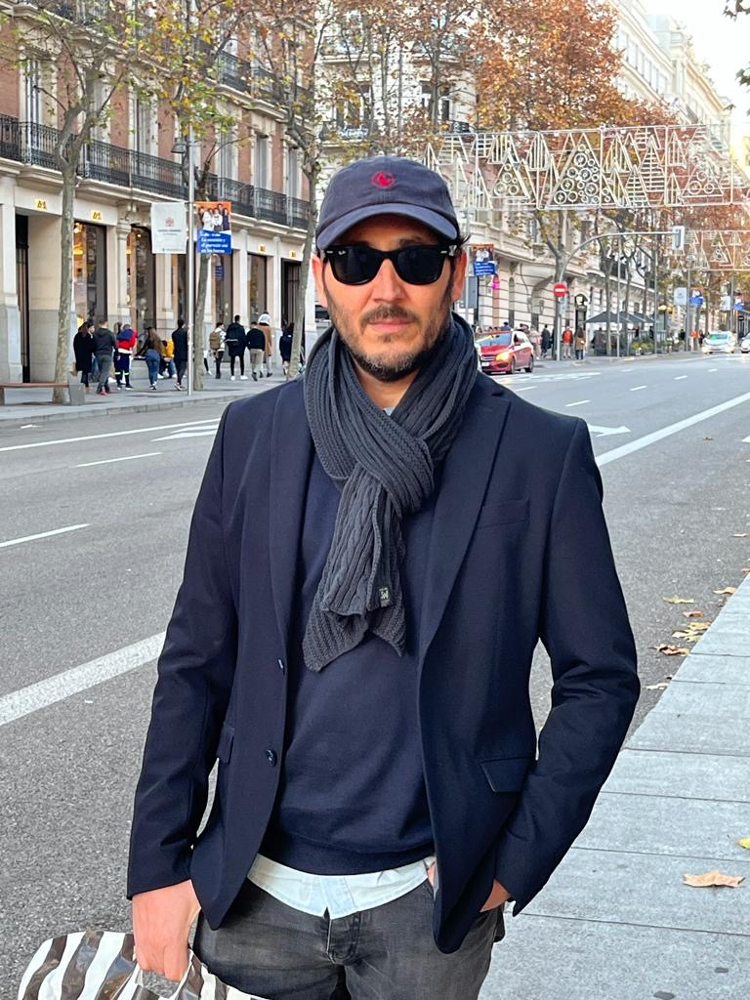
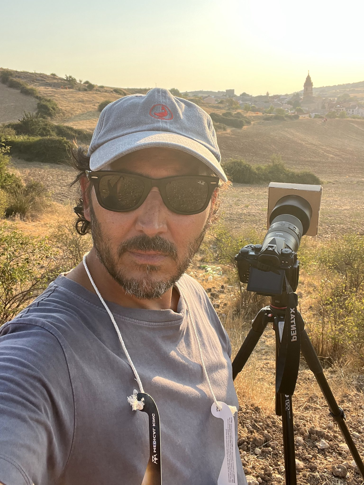

La persona detrás de las fotografías
Sobre mí
Una historia que comenzó con la fotografía analógica y que, con los años, me llevó a mirar hacia el cielo nocturno y a descubrir otra forma de fotografiar el paisaje.

Mi historia
Una mirada al cielo, desde el paisaje
Mi relación con la fotografía comenzó durante la etapa escolar, cuando un profesor nos acercó al mundo de la fotografía analógica y al proceso de revelado. Aquella primera experiencia despertó una curiosidad que, con los años, terminaría convirtiéndose en una forma de mirar el mundo.
Mi interés por la fotografía comenzó a tomar forma alrededor de 2010. Fue entonces cuando empecé a explorar la fotografía nocturna, acompañado por "José Luis Cifuentes - @jlvifuentes", con quien compartí aquellas primeras salidas bajo el cielo nocturno. Al principio fotografiábamos las luces de Madrid; poco a poco, mi curiosidad se fue desplazando hacia las estrellas, la Vía Láctea, la Luna y los fenómenos astronómicos. Aquellas primeras experiencias despertaron una pasión que, con el tiempo, me llevaría a buscar lugares con historia donde el paisaje y el firmamento pudieran encontrarse en una misma imagen.
Con el tiempo, la astrofotografía de paisaje se convirtió en el eje de mi trabajo.
Mi forma de fotografiar
El paisaje también cuenta una historia
Me interesa especialmente fotografiar el firmamento desde lugares con historia, donde una ermita, unas ruinas, un árbol o un paisaje reconocible aportan contexto y significado a lo que sucede sobre el horizonte.
No busco fotografiar únicamente las estrellas. Me gusta que el cielo y el lugar formen parte de una misma composición, que quien vea la imagen pueda detenerse tanto en el paisaje como en lo que ocurre sobre él.
Muchas de estas fotografías comienzan mucho antes de pulsar el disparador. La planificación es esencial para encontrar el lugar, la orientación y el momento adecuados. Herramientas como PhotoPills me ayudan a anticipar la posición de la Vía Láctea y de otros objetos celestes para buscar la composición que imagino.
Pero no todo se puede planificar. Algunas de las experiencias más memorables nacen de lo inesperado: un resplandor atmosférico, unas condiciones especiales del cielo o un detalle que aparece durante una sesión nocturna.

Planificación y paciencia
Detrás de cada imagen hay una experiencia
Fotografiar fenómenos astronómicos exige estudiar con antelación cómo se moverá el cielo y cómo se relacionará con el paisaje. La posición del Sol o de la Luna, el horizonte y el encuadre pueden convertir una escena en una imagen única.
En una sesión como la del eclipse solar, la preparación previa es parte fundamental del resultado. La elección del lugar, las pruebas y el seguimiento de cada fase requieren tiempo y atención.
También es una forma de aprender: cada salida aporta experiencia, nuevas preguntas y motivos para seguir explorando la relación entre la Tierra y el cielo.
Paisaje · Cielo · Tiempo
Mirar más allá del horizonte
Para mí, fotografiar el cielo es una manera de conectar el paisaje que tenemos delante con una escala mucho mayor. Cada imagen es una oportunidad para descubrir algo nuevo y compartirlo con quienes se detienen a mirar.